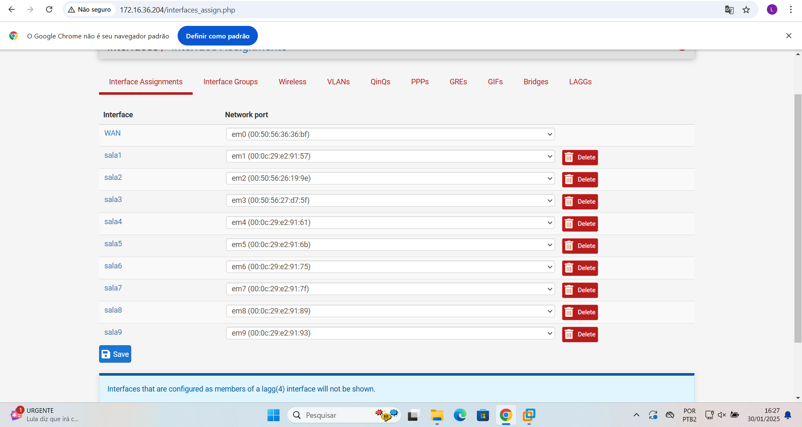
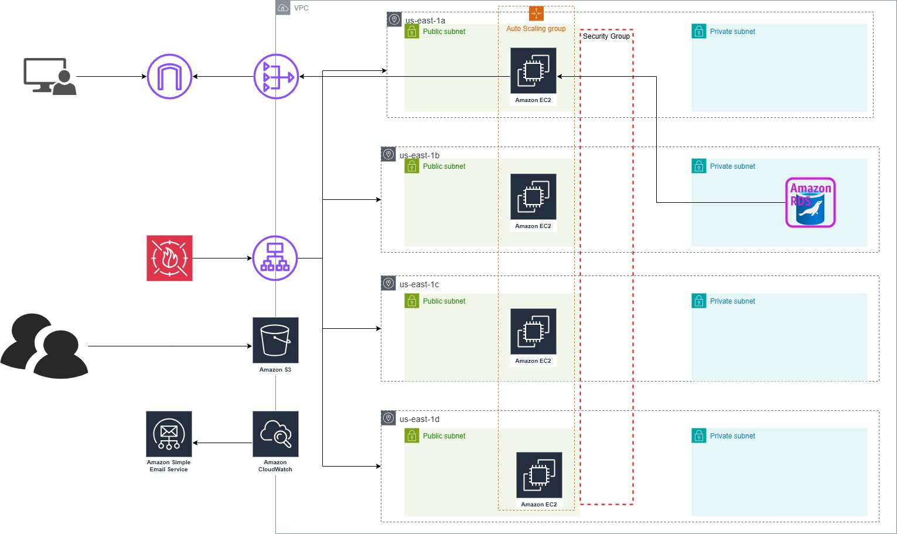
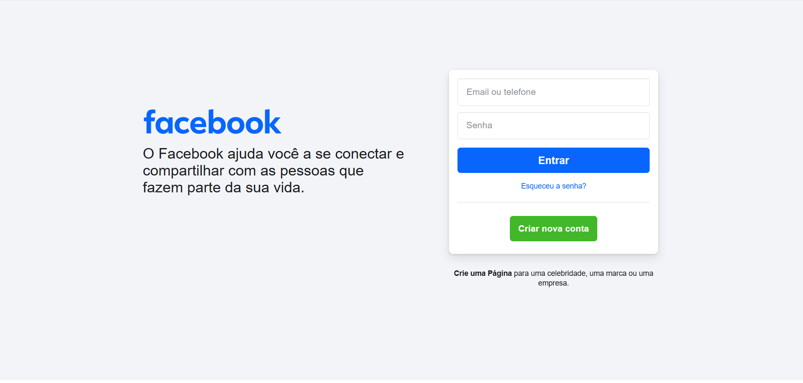

Projetos principais

Monitoramento com Zabbix

Firewall com PFsense

Infraestrutura Escalável na AWS

Phishing do Facebook
Experiência com
Arduino
Node
Linux
Bash
Google Cloud
GitHub
AWS
MySQL
Docker
VSCode
Windows
Grafana
Git
Kali Linux
Nginx
Python
Azure
Postman
Resumo
Atualmente sou estudante de Redes de Computadores, Segurança da Informação e Cloud Computing. Tenho experiência prática em ambientes virtualizados com VMware, serviços em nuvem (AWS e Azure), administração de servidores Linux e infraestrutura de redes. Também desenvolvo projetos voltados para segurança ofensiva e defensiva, automação de ambientes e Cloud. Estou em constante aprendizado e aprimoramento para atuar profissionalmente na área de CyberSecurity e Cloud Engineering.
Certificações

Microsoft Azure AZ-900

Microsoft Azure SC-900

Microsoft Azure AI-900

Microsoft Azure PL-900

Fortinet Associate Cybersecurity